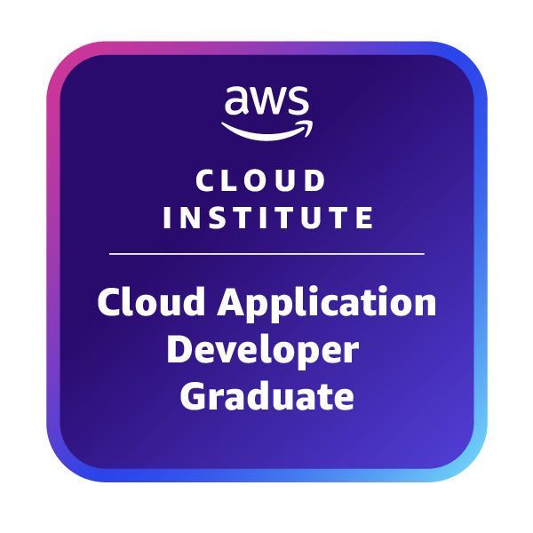
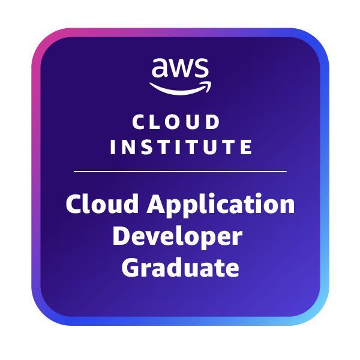

About
Hi, I am Danny Wilson, a Full Stack Developer and AWS Cloud Developer with a strong background in building modern web applications, signal support systems, and network management. I bring proven expertise from military service as a Signal Support Systems Specialist and civilian experience in payment systems technology.
As a full stack developer, I specialize in TypeScript, Next.js, React, and modern database technologies like PostgreSQL with Prisma ORM. I've built complete applications from concept to deployment, including ClassCast - an educational platform connecting teachers and parents. Currently advancing my cloud development skills through the AWS Cloud Institute's comprehensive program, I excel at designing scalable cloud architectures, implementing CI/CD pipelines, and developing serverless applications.
Education
- Minor in Mathematics
- Completed comprehensive coursework in computer logic, programming languages, algorithm analysis, computer networking, software engineering, operating systems, database management, and data structures
- Developed strong foundational background in cultural awareness and social implications of technology
- Designed and implemented scalable, high availability architectures using AWS services such as EC2, RDS, DynamoDB, S3, IAM, Redshift, and CloudFront to optimize performance and reliability
- Built and secured network architectures with VPCs, subnets, route tables, and security groups, ensuring compliance with security best practices
- Automated cloud infrastructure and application deployments using CI/CD pipelines (AWS CodePipeline, CodeBuild and CodeDeploy) to improve efficiency, consistency, and release management
- Developed serverless applications with AWS Lambda, API Gateway, and DynamoDB, optimizing cost efficiency and scalability
- Gained hands-on experience through 100+ interactive AWS Labs and two capstone projects, applying cloud architecture and DevOps best practices in real-world scenarios
- Integrated AI/ML services such as Amazon SageMaker, Rekognition, and AWS Bedrock, exploring AI-powered automation predictive analysis, and natural language processing in cloud applications
Technical Skills
- Frontend: TypeScript, Next.js, React, HTML5, CSS3, JavaScript
- Backend: Node.js, Next.js Server Actions, RESTful APIs
- Database: PostgreSQL, Prisma ORM, Database Design & Optimization
- Authentication: JSON Web Tokens (JWT), Secure Authentication Systems
- UI/UX Development and Optimization
- API Development and Testing (Postman)
- AWS Services: EC2, RDS, DynamoDB, S3, IAM, Lambda, API Gateway, CloudFront
- CI/CD Pipelines: AWS CodePipeline, CodeBuild, CodeDeploy
- Serverless Architecture and Microservices Design
- Infrastructure as Code and DevOps Best Practices
- AI/ML Integration: Amazon SageMaker, Rekognition, AWS Bedrock
- Programming Languages: TypeScript, JavaScript, Python, C, C++
- Database Management and Data Structures
- Algorithm Analysis and Software Engineering
- Computer Logic and System Architecture
- Version Control: Git, GitHub
- TCP/IP, TelNet, FTP, DHCP, DNS, SMTP, POP3
- LAN Management and Network Operations
- Cisco Switches and Router Configuration
- Satellite Communications (Ku-Band TDMA DAMA VSAT)
- Operating Systems: Windows 10/11, macOS, Linux, Windows Server 2019/2022
- Hardware: Desktop/Laptop Computers, Printers, Network Equipment
- Signal Support Systems: AN/TSQ-232(V)4 Tactical Command System
- Military Communications Equipment and GPS Systems
- Microsoft Office Suite: Excel, Word, PowerPoint, Outlook
- System Troubleshooting and Maintenance
Certifications & Clearances

 

- AWS Cloud Practitioner
- AWS Developer Associate
- AWS Cloud Institute - Cloud Application Developer Program
- View all certifications on Credly
- Secret Security Clearance
- Information Assurance Security Officer Certification
- SMART-T Training Certification
- FBCB2-BFT Leader OpNet Course Certification
- United States Army Noncommissioned Officers Academy Certification
- Army G3 Computer Security Training Certification
- Computer User Security Course Certification
- Ku-Band TDMA DAMA VSAT Satellite Communications Certification
- Army Distance Learning Vocational Program (625 hours)
Featured Applications & Projects
- Built a full-stack web application connecting teachers and parents to improve classroom communication
- Developed using TypeScript, Next.js, React for frontend with responsive design and intuitive UI
- Implemented secure backend with Next.js Server Actions, PostgreSQL database, and Prisma ORM
- Features secure JWT-based authentication, encrypted data storage, and image compression/storage
- Created teacher "update board" system allowing real-time classroom event broadcasting with image tagging
- Designed separate user management systems for parents and educators with role-based access control
- Utilized Postman for comprehensive API endpoint testing and validation
- View Project Details | GitHub Portfolio
- Designed and implemented Standard Operation Procedures for Preventative Maintenance Checks and Services for Heartland Payment Systems (Fortune 500 company)
- Operated as Senior LAN Manager and Command Post Platform Team Leader providing 24-hour tactical communications support
- Managed network operations for Light Infantry Division Special Troops Battalion
- Supervised installation, repair, operation and maintenance of AN/TSQ-232(V)4 Tactical Command System
- Planned and implemented tactical support team for travel to two forward operating bases
- Organized travel arrangements and living support for high-ranking officers (30+ per month with seamless success)
- Counseled 8 Soldiers as Non-commissioned Officer, leading to 5+ promotions
- Managed equipment valued at over $1,500,000 during wartime operations
- Developed and implemented comprehensive curriculum and assessment strategies
- Increased team performance by 21.4% through innovative teaching methodologies
- Met and exceeded expectations in all areas of teacher evaluations consistently
- Integrated technology and modern teaching tools to enhance student engagement
Applications

🚀 100+ Active Users
- Live Application: class-cast.com
- Status: Live EdTech platform serving 100+ educators and students in modern learning environments
- Demo Access: Experience the full UX with test credentials:
Username:dwilson1919@gmail.com
Password:Test1234! - Purpose: AI-enhanced learning platform designed for modern video assignments, peer-to-peer learning connections, and enhanced classroom engagement
- Core Features: Video assignment management, AI-powered learning analytics, peer collaboration tools, real-time classroom broadcasting, and interactive learning experiences
- Educational Innovation: Transforms traditional classroom communication into dynamic, video-centric learning experiences with AI assistance for personalized education
- Frontend: TypeScript, Next.js, React with responsive design optimized for educational workflows
- Backend: Next.js Server Actions, RESTful API architecture with AI integration capabilities
- Database: PostgreSQL with Prisma ORM for educational data management and analytics
- Security: JWT-based authentication, encrypted data storage, FERPA-compliant educational data protection
- Development Approach: Built using AI-assisted development methodologies to accelerate development and enhance code quality
- Testing: Comprehensive API testing with Postman, educational workflow validation
- Innovation: Custom video processing, AI-enhanced learning pathways, peer connection algorithms, and modern EdTech user experience
- Visit Live App | Project Details | GitHub Repository

🎵 30+ Active Users
- Live Application: Try the App (No login required)
- Status: Live production application serving 30+ musicians and music enthusiasts
- Purpose: Modern web application for songwriters to create and play chord progressions using keyboard input, without needing to learn piano or guitar
- Technology Stack: Next.js 15, TypeScript, Tailwind CSS, Tone.js Web Audio API, AWS Amplify Gen 2
- AWS Integration: Hosted on AWS Amplify with Cognito authentication, DynamoDB data storage, S3 file storage, and Amplify hosting
- Key Features: Real-time audio playback, multiple key signatures (C, G, D, A, E major), popular chord progressions, keyboard mapping, responsive design
- Audio Technology: Polyphonic synthesis with low-latency playback, triangle wave synthesis with envelope shaping, cross-browser compatibility
- Supported Progressions: I-V-vi-IV (Classic pop), vi-IV-I-V (Emotional), I-vi-IV-V (Doo-wop), ii-V-I (Jazz), I-IV-V-I (Blues)
- Development Approach: Built using AI-assisted development methodologies to accelerate development and enhance code quality
- Visit Live App | GitHub Repository
- Live Website: dannywilson.info
- Purpose: Modern, responsive portfolio website showcasing full-stack development skills, AWS cloud expertise, and professional experience
- Technology Stack: HTML5, CSS3, JavaScript, responsive design with custom CSS variables and Google Fonts integration
- Features: Single-page application with smooth section transitions, interactive navigation, professional dark theme, mobile-responsive design
- Sections: About, Education, Skills, Certifications with badge images, Live Applications showcase, Professional Experience, Military Awards, Contact information
- Deployment: GitHub Pages with custom domain configuration and DNS management
- Design Philosophy: Clean, professional aesthetic optimized for both desktop and mobile viewing with focus on user experience
- Integration: Links to live applications (ClassCast, Chord Progression App), GitHub repositories, LinkedIn profile, and Credly certifications
- Visit Portfolio | GitHub Repository
- Focus on user-centered design and intuitive interfaces
- Emphasis on security best practices and data protection
- Full stack approach from concept to deployment
- Integration of domain expertise (education, music) with technical skills
- Continuous learning and adoption of modern development practices
Professional Experience
- Supervised installation, maintenance, and troubleshooting of signal support systems and terminal devices including satellite, radio, wire, and battlefield automated systems
- Provided technical assistance and unit-level training for automation, communication, and user-operated signal equipment
- Managed network operations and LAN management for tactical communications
- Supervised health, welfare, and professional development of 5 Soldiers
- Promoted to Sergeant at first opening with Superior Senior Rater score
- Monitored, maintained, and troubleshot network, hardware, operating systems, and applications
- Worked with Network Administrators to improve operational procedures
- Tracked and resolved surfaced issues in Fortune 500 payment processing environment
- Designed Standard Operation Procedures for Preventative Maintenance
- Developed ClassCast.com, an AI-enhanced EdTech learning platform designed for modern video assignments and peer-to-peer learning connections, currently serving 100+ users in educational environments
- Taught mathematics and computer science in diverse educational environments including Title 1 schools
- Developed and implemented comprehensive curriculum and assessment strategies
- Created and managed extensive student portfolio systems and academic tracking
- Increased team performance by 21.4% through innovative teaching methodologies
- Met and exceeded expectations in all areas of teacher evaluations consistently
- Mentored and supported student academic achievement and personal development
- Collaborated with administration and fellow educators to improve school-wide performance
- Integrated technology and modern teaching tools to enhance student engagement
Military Awards & Recognition
- Exceptional service as Team Leader supporting Multi-National Division-Center during Operation Iraqi Freedom
- Exceptional and meritorious service as Retransmission Team Member with tactical expertise under secure network
- Achievement in ensuring success of civil-military coordination conference in International Zone, Baghdad
- Outstanding service as Senior LAN Manager for Data Support Team, Network Support Company
- Exemplary behavior, efficiency and fidelity in active federal military service
- Good Conduct Medal (2008)
- New Volunteer (Rookie) of the Year (2009)
- Promoted to Sergeant at first opening with Superior Senior Rater score
- Recommended for promotion "at first available opportunity"
Contact Information
- Email: wilson.danny@me.com
- Phone: (404) 803-7330
- LinkedIn: danny-wilson-2274465
- GitHub: DannyWilsonCodeShop
- Security Clearance: Secret (held)
- Proven track record in IT systems, network management, and team leadership
- Military veteran with extensive experience in secure communications
- Strong background in both technical operations and educational environments
- Available for opportunities in IT, cybersecurity, and technical leadership roles